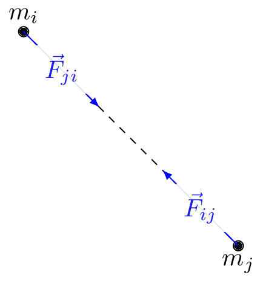

pre.tex
\documentclass[tikz]{standalone}\input{pre.tex}\begin{document}\begin{tikzpicture}
\coordinate (A) at (0,0) ;
\coordinate (B) at (3,-3) ;
\draw[dashed] (A) node [above] {$m_i$} -- (B) node [below] {$m_j$};
\draw[fill=black] (A) circle (2pt) (B) circle (2pt);
\draw[->, >=latex,blue] (A) -- node[midway,fill=white!20, opacity=0.9] {$\vec{F}_{ji}$} ++(-45:1.5);
\draw[->, >=latex,blue] (B) -- node[midway,fill=white!20, opacity=0.9] {$\vec{F}_{ij}$} ++(135:1.5);
\end{tikzpicture}\end{document}